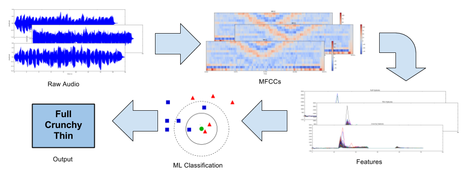
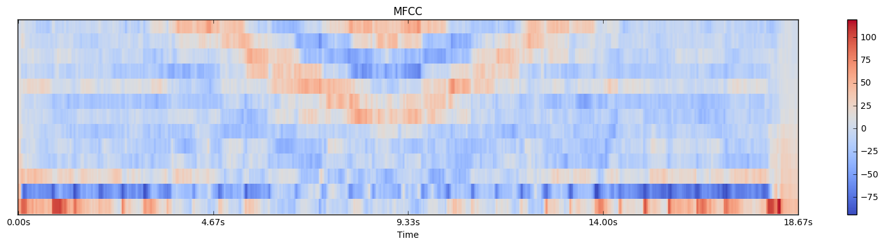
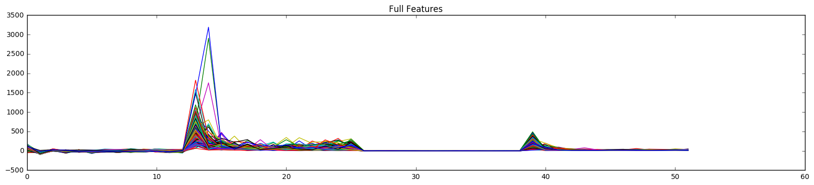
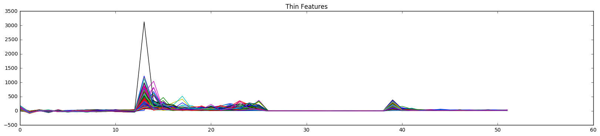
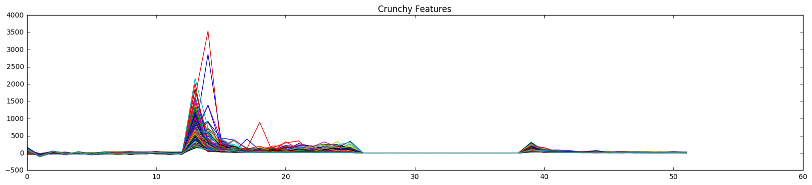

TonEd is a tool that can be used to identify different kinds of violin tone and diagnose the underlying cause of poor tone quality. Young violin students often struggle to play with a rich, full tone - TonEd aims to be useful for students who wish to improve their tone but may not have access to a trained instructor who would be able to identify the problems influencing the tone of their notes. TonEd is partially inspired by existing commercial music education programs, most notably SmartMusic, which allow students to record themselves practicing and then give feedback on intonation, tempo, and other stylistic elements. However, these programs fail to identify tone deficiencies well, which is the specific niche our project fills.
The problem is simple. Young violinists want to play with a full, rich, and beautiful tone:
But instead, their tone is crunchy and unpleasant:
Or too thin and covered:
A young violin student has two problems when it comes to tone. The first is that their ears are not trained to reliably tell what a full, rich tone sounds like. The second is that once the student realizes they are playing with poor tone, they are unable to quickly diagnose the cause behind their poor tone. A good teacher solves both of these problems, but TonEd aims to help students who may not have access to quality instruction.
Our solution is a simple nearest neighbor classifier. Given an input recording of a scale played on a violin, the recording's tone is classified as one of three discrete categories: Full, Thin, or Crunchy. Using this feedback the student can then improve the quality of their music after having identified the errors causing them to play with poor tone. 
The classifier is trained on a set of recordings from six experienced violinists with good tone control, who each provided a crunchy, thin, and full toned sample. Our sample collection guide is available here. Each sample consists of a 2 octave C Major scale played at 100 beats per minute. Each of these recordings is broken down on a note by note basis, and subsequently the Mel Frequency Cepstral Coefficents (MFCCs) of each of these notes is calculated and used to train the nearest neighbor classifier. Each recording contains 29 notes, thus the model is trained on 522 total data points. We used several different testing methods to measure the success of our classifier, including leave one out cross validation and ten fold cross validation. We measured the success of our classifier using the precision value of the results, and we used a confusion matrix as well to analyze classification results.
A practical use of TonEd means classifying whole scales together in one piece. We do this by breaking down the scale into notes and then classifying each note as either Full, Thin, or Crunchy. We then simply identify the most common class of the notes that made up the scale and assign the whole scale that class.
Our feature extraction begins with the MFCC of an entire scale.  In order to provide more data for our machine learning algorithm, we window each scale into a series of notes (29 notes per scale x 18 scales total = 522 notes). Each note has a specific tone quality associated with it. From there, we take the mean and variance of each coefficient in each note, as well the mean and variance of the first deriviative of each coefficient in each note and save these features in a one dimensional array.    We train our machine learning algorithm on the set features extracted from our set of 522 notes.
After feature extraction, we used the vectors to train various different machine learning algorithms, including Decision Trees, Nearest Neighbor, Multi-Layer Perceptrons, and Stochastic Gradient Descent. We used cross validation techniques to judge the performance of each algorithm on our data set, and Nearest Neighbor performed the best, with a precision of .52. On certain scales in our data set other algorithms perform better than Nearest Neighbor, but we found that overall it has the highest performance statistics of the algorithms we tested and thus is best suited to the general case of an unknown input scale.
Our results are fair but certainly not ready for widespread use. Given the difficult nature of our task, however, we feel that our results show promising signs for future development. The chart below outlines our success with 10 fold cross validation tests with different sets of features and different machine learning algorithms.
Our cross validation tests give the best results when we use the Nearest Neighbor algorithm and include all of our features, achieving a success rate of about 52%. This is significantly better than guessing, which would yield a rate of about 33%. However, we believe that even better results can be achieved with more work and research.
Classifying scales yields similar results. We tested our scale classification by holding out a single person's samples from the training set and then classifying each of that person's 3 scales. As we would expect, our scale classification generally reports the correct scale about 60% of the time.
In order to improve the performance of our system there are two main areas we believe can be improved: feature extraction and fine-tuning the algorithm we use. In order to improve feature extraction, further research into the similarities and differences between the timbre of individual violins would allow us to use features that identify the thin, crunchy or full tone of a recording rather than the characteristics of the violin used to create the recording. Fine tuning the learning algorithms that we use would also help improve the performance of our system, because we were able to achieve drastically different precision depending on the parameters used for the algorithms. The parameters we selected were the best that we found, however we believe that extensive further testing could help isolate the best input parameters for each algorithm, which would increase the precision of our system.